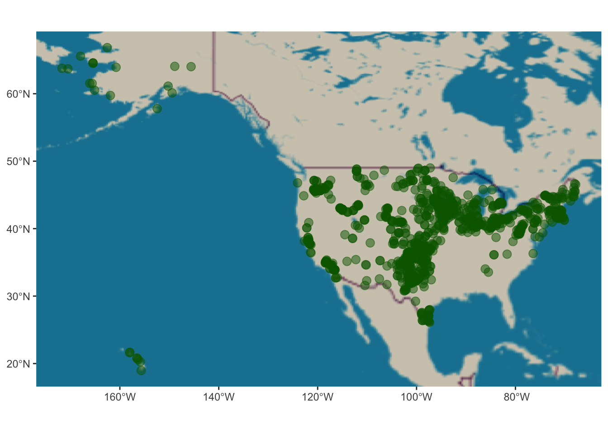
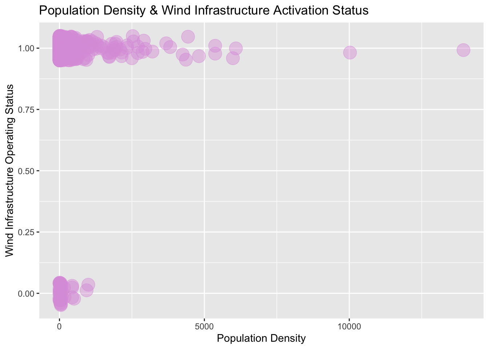
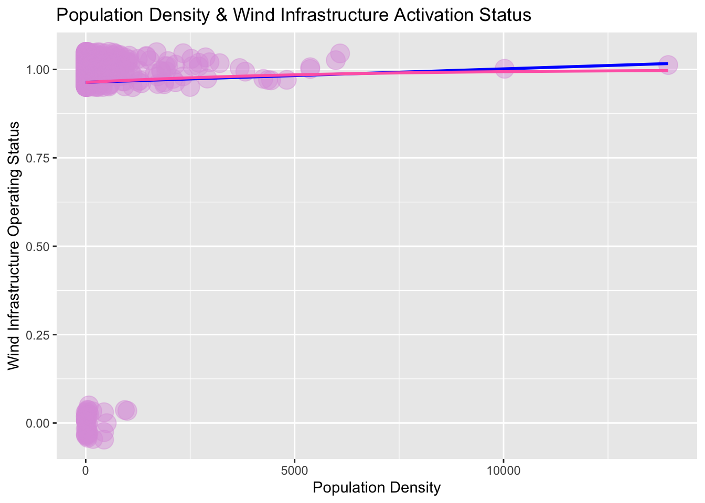

# Loading Libraries
library(tidyverse) # essential r package
library(sf) # package simplifies spatial dataframes
library(cowplot)
library(spData)
library(raster)
library(ggspatial)
library(prettymapr)
library(ggmap)
library(naniar)
library(tmap)
library(terra)
library(patchwork)
library(broom)
library(stars)
library(devtools)
library(maptiles)
library(smoothr) # aesthetic and visual aid for buffers createdSpatially Distorted Signaling Wind Infrastructre
In this documentation, the data utilized is the US Wind Data, this data is associated with the “Replication Data for: Prevalence and predictors of wind energy opposition in North America”,[doi] Harvard Dataverse, V1, 2023. The collaborators on that project include: Stokes, Leah; Franzblau, Emma; Lovering, Jessica R.; Miljanich, Chris.
Analysis of these areas will provide insight into local resistance and spatially distorted signalling in relation to wind power infrastructure and climate policy.
~ include more about what the data is about and the outcomes of making visualization ~
Main Takeaways:
Linear Regression Models are not always the answer
Dude, That’s Logit!
What in the Log Odds?
Binary Predictions for Binary Variables
Loading Libraries
The following libraries were selected based on their functionality and ability to optimize our data for mapping.
Read in the Data
To simplify the following step, it is important to organize your folders in a way that makes sense for your workflow. In many cases, the data sets we work with are typically too large to be uploaded to GitHub. As a result, a common practice is storing your data in a folder, directly outside of your repository in a folder labeled “data”.
The code chunk below for read.csv demonstrates how to exit your current location using .. and enter the desired folder location using /. It is important that your file path does not contain any spaces and is directly reflective of the file path for the data you wish to read in.
U.S. Wind Data
# reading in & storing data
wind_data <- read.csv("../data/wind_data/wind_data_usa.csv") Confirm the Data Loaded Properly
head(wind_data) # displays the first 6 rows of the data X state plant_name cen_tract_id region_meta year status
1 1 OH ada school 39065000400 Midwest 2011 Operating
2 2 IL arends brothers wind turbine 17029000600 Midwest 2009 Operating
3 3 AK avtec 2122001300 West 2010 Operating
4 4 OH bellevue high school 39143962200 Midwest 2010 Operating
5 5 IL big windy 17031770800 Midwest 2009 Operating
6 6 WY blm field office wind turbine 56007967800 West 2010 Operating
community_ownership source median_age protesters_mean letters_use courts_use
1 1 awea 22.5 NA 0 0
2 1 awea 44.2 NA NA NA
3 1 awea 39.4 NA NA NA
4 1 awea 38.9 NA NA NA
5 1 awea 35.3 NA NA NA
6 1 awea 38.1 NA 0 0
legislation_use is_anti_wind longitude latitude gop_per med_inc white_perc
1 0 1 -83.83600 40.77500 0.6081081 28103 0.9326417
2 NA 0 -88.02978 39.53132 0.7653214 49704 0.9778930
3 NA 0 -149.43426 60.12564 0.4095064 57532 0.7256915
4 NA 0 -82.84592 41.28236 0.6320885 48879 0.9519143
5 NA 0 -87.86519 41.95547 0.3862876 48900 0.6761018
6 0 0 -107.24175 41.79752 0.6207455 64009 0.7235321
his_lat_perc black_perc pop_den total_mw n_turbs turb_ht
1 0.015035333 0.017591340 553.486602 0.40 1 131.234
2 0.004093886 0.006823144 25.991262 0.10 1 95.100
3 0.028290025 0.018440905 2.540609 0.10 1 95.100
4 0.027575205 0.003874202 1536.689356 0.10 1 95.100
5 0.229487639 0.016839842 3683.457543 0.11 1 78.700
6 0.238095238 0.006703652 400.979020 0.10 1 95.100Wrangling & Subsetting
Converting lat/long into Raster Data (i.e. sticky geometries)
Below we will use the package sf to convert the lat/long data into a raster geometry column. In this single line, we will also be assigning the CRS EPSG:4326 to the sf data frame. Coordinate Reference Systems, CRS, are required in order for the data to be projected onto a map. The CRS was selected because it provides a relatively proportionate display of the United States. We are open to suggestions regarding our CRS if a different project better fits our data.
wind_sf <- wind_data %>% # calls desired dataset
st_as_sf(coords = c("longitude", "latitude"), crs = 4326)
# creates geometry column with desired crs
glimpse(crs(wind_sf)) # output should reveal WGS84, EPSG:4326 chr "GEOGCRS[\"WGS 84\",\n ENSEMBLE[\"World Geodetic System 1984 ensemble\",\n MEMBER[\"World Geodetic Sys"| __truncated__Check-point
Let’s stop and see if our outputs are what we expect.
Were the lat/long columns correctly converted into a geometry column?
setdiff() is a way to quickly determine the differences between two data sets.
setdiff(colnames(wind_data), colnames(wind_sf))[1] "longitude" "latitude" setdiff(colnames(wind_sf), colnames(wind_data))[1] "geometry"Initial Visualization of the Data
Using the base R function plot(), we can see that the geometries stored by this data set correlate to the locations of wind infrastructure plants throughout the United States. In order to visualize these locations with respect to state and county jurisdictions, we’ll need to utilize another data set to create a base layer for our map.
# First visual of the U.S. wind data provided by the geometry points
wind_plants <- ggplot(wind_sf) +
annotation_map_tile(type = "osm") +
geom_sf(col = 'darkgreen',
alpha = 0.5,
size = 3)
wind_plants
Linear Regression Models
Variables of Interest:
| Name | Description |
|---|---|
| status | describes the operating status of wind infrastructure, binary variable. 1 is operating, 0 is not_operating. |
| pop_den | population density of census tract ids within 3km buffer of wind infrastructure. |
| med_inc | defines the median income of census tract ids within 3km buffer zone of wind infrastructure. |
| median_age | describes the median age of census tract ids within 3 km radius of wind infrastructure. |
An attribute from each column will be used to run several multivariate linear regression models. This is to assess the effects of socioeconmic/regional influences on wind infrastructure and the estimated likelihood of participating legislative action when living within a 3km proximity of a wind plant.
Determining Variable Assignments for OLS
unique(wind_sf$status) # displays unique values in this[1] "Operating" "Cancelled"
[3] "Out of service (temporarily)" "Standby"
[5] "Decommissioned" "Operating | Decommissioned"
[7] NA Need to rename status output variables
# creating two categories: operating & not_operating
# We are removing 'Operating | Decommissioned' because it skews the data
unwanted_status <- "Operating | Decommissioned"
replacement_status <- "Uncertain Status"
wind_sf$status[wind_sf$status== unwanted_status]<-"Uncertain Status"
# were we successful ?
unique(wind_sf$status) # displays unique values in this[1] "Operating" "Cancelled"
[3] "Out of service (temporarily)" "Standby"
[5] "Decommissioned" "Uncertain Status"
[7] NA # cleaning out NAs for OLS
wind_sf <- wind_sf %>%
filter(is.na(status) == 'FALSE') %>%
filter(is.na(is_anti_wind) == 'FALSE') %>%
filter(is.na(pop_den) == 'FALSE') %>%
filter(is.na(med_inc) == 'FALSE') %>%
filter(is.na(median_age) == 'FALSE') %>%
filter(is.na(n_turbs) == 'FALSE')
# were we successful ?
unique(wind_sf$status) # displays unique values in this[1] "Operating" "Cancelled"
[3] "Out of service (temporarily)" "Standby"
[5] "Decommissioned" "Uncertain Status" # if_else preserves the data type but replaces unwanted values
wind_us <- wind_sf %>%
mutate(status = if_else(
status %in% c('Cancelled', 'Out of service (temporarily)', 'Standby', 'Decommissioned', 'Uncertain Status'), 'not_operating',
'operating')
)
# are our only outputs "operating" and "not_operating"?
print(unique(wind_us$status))[1] "operating" "not_operating"# status as factor and reassigned values
wind_us <- wind_us %>%
mutate(status = case_when(status == "operating" ~ 1,
status == "not_operating" ~ 0))
# are our only outputs 0 or 1?
print(unique(wind_us$status))[1] 1 0Binary variable will be status column: opertating is 1, and not_operating will be 0.
Dude, that’s Logit!
Initial Visualization of Categorical Response Variable
Our initial visualization demonstrates a correlation between smaller population density and wind infrastructure plants operating. This is likely associated with weight placed on voters in regions with smaller demographics. Local mobilization of minority opinion holders in these regions have a greater availability to push back against policymakers. However, this visual does not encapsulate all of the necessary information required to determine this with full certainty.
# visualization of relationship
jitter_plot <- ggplot(data = wind_us,
aes(x = pop_den,
y = status)) +
geom_jitter(col = 'plum',
fill = "purple",
width = 0,
height = 0.05,
alpha = 0.45,
size = 6) +
labs(title = "Population Density & Wind Infrastructure Activation Status",
x = "Population Density",
y = "Wind Infrastructure Operating Status")
jitter_plot
# useful information
summary(wind_us$pop_den) Min. 1st Qu. Median Mean 3rd Qu. Max.
0.143 4.309 12.493 181.484 40.394 13940.515 Logistic Regressions with Binomial Family:
Binary Dependent Variable
\[ \text{status}\ = \beta_0 + \beta_1 \text{pop_den}\_i + \varepsilon_i \]
Our summary table describes a null deviance
362.60.(1178 df) and residual deviance362.22(1177 df).A p-value of
0.593for \(\beta_1\), is greater than the significant value of 0.05, therefore, the model hypothesis that operation status is influenced by population density holds.However, I am still not convinced there isn’t a correlation shared with another factor, so let’s explore how our numbers change as we incorporate more variables into our equation later on.
# Inital regression 1 betas for null
# function
status <- glm(status ~ pop_den,
wind_us,
family = 'binomial')
# summary to access coefficients
status1 <- summary(glm(status ~ pop_den,
wind_us,
family = 'binomial'))
# show me a summary table
status1
Call:
glm(formula = status ~ pop_den, family = "binomial", data = wind_us)
Coefficients:
Estimate Std. Error z value Pr(>|z|)
(Intercept) 3.2721930 0.1623175 20.159 <2e-16 ***
pop_den 0.0001793 0.0003356 0.534 0.593
---
Signif. codes: 0 '***' 0.001 '**' 0.01 '*' 0.05 '.' 0.1 ' ' 1
(Dispersion parameter for binomial family taken to be 1)
Null deviance: 362.60 on 1178 degrees of freedom
Residual deviance: 362.22 on 1177 degrees of freedom
AIC: 366.22
Number of Fisher Scoring iterations: 6What in the Log Odds?
So far, we haven’t been able to gather very much useful information to describe our model predictions. If this were a typical OLS, our model would be telling us:
- When wind turbines are operational, and all other variables are held constant at 0, the \(\beta_0\) represents the estimated likelihood that
statusof a wind infrastructure plant isoperatingis ~3.27.
- \(\beta_1\) tells us there is an estimated increase of
1.79e-04in probability that status would beoperatingfor the average unit increase inpop_den.
Since we’re working with a binomial family, the p-values produced in the glm() need to be further extrapolated before they may be used to interpret our model.
Our model that we just fit tells us that:
\[logit(p)=log( p / 1−p)=β0+β1x+ε\]
so then, to solve for p:
\[ p̂=e^(β0+β1x1+eβ0+β1x) \]
Alternatively, we’re going to solve for p using \(R^2\) because that looks gross. The uniroot function searches over the provided interval to find the zero value of the function provided. We pass the expression that should equal zero, and it finds us the p that ensures it equals zero.
Finding p
Utilizing the funky relationship described above, we can solve for a range of p values using \(R^2\). We’re curious about the probability of operating wind plants for Population Density at 20,000, 6,000, and 600. H
# creating a function to to describe the logistic regression model
# 100,000
fun <- function(p) {
(1 - p)*exp(status1$coefficients[1,'Estimate'] + (status1$coefficients[2,'Estimate']*20000)) - p
}
#
uniroot(fun, interval = c(0,1))$root[1] 0.9989509# 26000
fun <- function(p) {
(1 - p)*exp(status1$coefficients[1,'Estimate'] + (status1$coefficients[2,'Estimate']*6000)) - p
}
#
uniroot(fun, interval = c(0,1))$root[1] 0.9872347# 6000
fun <- function(p) {
(1 - p)*exp(status1$coefficients[1,'Estimate'] + (status1$coefficients[2,'Estimate']*600)) - p
}
#
uniroot(fun, interval = c(0,1))$root[1] 0.967067Logistic Regression Visualization
This visual is very interesting and definitely explains why the \(R^2\) value is only giving values in the 0.9 range. Since our data contains a significant number of operating wind plants for a wide range of population densities, the regression model is producing a fit according to the operating status. The values in the not_opertating status appear to be considered similar to that of an outlier.

Interpreting Coefficients Using Odds Ratio
To better interpret this relationship, we are going to change the scale of the variable on the y-axis. Now, we will be considering the odds, rather than the probability. While these two concepts are often conflated, they are not the same[2]. They are however, related by the simple formula below.
The odds of a binary event are the ratio of how often it happens, to how often it doesn’t happen.
\(odds(p̂)=p̂1−p̂=exp(β̂0+β̂1⋅x)\)
We’re going create an status_popden_odds variable for predicted odds.
That is, the ratio of the odds after a one unit increase in x to the odds before that one unit change is equal to eβ1. Notice this doesn’t depend on x anymore! Therefore, it’s a useful interpretation of coefficients.
status_popden_predicted_odds <- status %>%
augment(type.predict = "response") %>%
mutate(y_hat = .fitted) %>%
mutate(odds_hat = y_hat / (1 - y_hat))
status_popden_predicted_odds# A tibble: 1,179 × 10
status pop_den .fitted .resid .hat .sigma .cooksd .std.resid y_hat
<dbl> <dbl> <dbl> <dbl> <dbl> <dbl> <dbl> <dbl> <dbl>
1 1 553. 0.967 0.260 0.00147 0.555 0.0000253 0.260 0.967
2 1 26.0 0.964 0.272 0.000901 0.555 0.0000170 0.272 0.964
3 1 2.54 0.963 0.273 0.000925 0.555 0.0000176 0.273 0.963
4 1 1537. 0.972 0.238 0.00681 0.555 0.0000994 0.239 0.972
5 1 3683. 0.981 0.197 0.0274 0.555 0.000284 0.200 0.981
6 1 401. 0.966 0.263 0.00110 0.555 0.0000195 0.264 0.966
7 1 46.9 0.964 0.272 0.000884 0.555 0.0000167 0.272 0.964
8 1 113. 0.964 0.270 0.000853 0.555 0.0000159 0.270 0.964
9 1 40.5 0.964 0.272 0.000889 0.555 0.0000168 0.272 0.964
10 1 2529. 0.976 0.218 0.0156 0.555 0.000194 0.220 0.976
# ℹ 1,169 more rows
# ℹ 1 more variable: odds_hat <dbl>This is an “odds ratio”, meaning we care about how this number differs from 1. If it’s greater than 1, then the odds increase when x increases. Conversely, if it’s less than 1, then the odds decrease.
- By how much does our model predict that the odds of
operating statuswill change with each additional unit increase in population density?
exp(status1$coefficients[2,'Estimate'])[1] 1.000179Answer: Our model estimates that one unit increase in population density is associated with a change in the odds ratio of \(e^(0.0001793) =1.000179\), or a 1.79e-04% increase in the odds of wind plant having an operating status.
Logistic Model with 2 Continous Variables
\[ \text{status}\ = \beta_0 + \beta_1 \text{pop_den}\_i + \beta_2 \text{med_inc} + \varepsilon_i \]
Our summary table describes a null deviance 362.60.(1178 df) and residual deviance 359.84 (1176 df).
Additionally, it provides a p-value of 0.511 for \(\beta_1\), indicating that the hypothesis here is accepted because it is greater than the significant value of 0.05.
The p-value of \(\beta_2\), 0.957s is acceptable because it is above range of the significant value.
status_2 <- glm(status ~ pop_den + med_inc,
wind_us,
family = 'binomial')
# Initial regression 2 betas for null
status2 <- summary(glm(status ~ pop_den + med_inc,
wind_us,
family = 'binomial'))
status2
Call:
glm(formula = status ~ pop_den + med_inc, family = "binomial",
data = wind_us)
Coefficients:
Estimate Std. Error z value Pr(>|z|)
(Intercept) 4.028e+00 4.950e-01 8.138 4.03e-16 ***
pop_den 2.477e-04 3.776e-04 0.656 0.5118
med_inc -1.497e-05 8.988e-06 -1.666 0.0957 .
---
Signif. codes: 0 '***' 0.001 '**' 0.01 '*' 0.05 '.' 0.1 ' ' 1
(Dispersion parameter for binomial family taken to be 1)
Null deviance: 362.60 on 1178 degrees of freedom
Residual deviance: 359.84 on 1176 degrees of freedom
AIC: 365.84
Number of Fisher Scoring iterations: 6Interpreting Coefficients using Odds Ratio
In a typical OLS model, we would intuitively want to assume the following from our model:
When wind turbines are operational, and all other variables are held constant at 0, the \(\beta_0\) represents the estimated likelihood that status of a wind infrastructure plant is operating is ~ 4.03.
\(\beta_1\) tells us there is an estimated decrease of 2.47e-4 in probability that status would be operating for the average unit increase in is_anti_wind opinion holders.
For every average unit increase in pop_den, \(\beta_2\) predicts 1.50e-05 will increase the operating status, indicating pop_den is an extremely marginal influence, that may potentially be interacting with is_anti_wind outlook.
However, it’s important to remember that we still need to exponentiate our estimated values in order to obtain our p-values. We’re here to break the status quo and train our brains to interpret logistic regressions.
\[logit(p)=log( p / 1−p)=β0+β1x+ε\]
# beta1 estimation exponentiated
exp(status2$coefficients[2,'Estimate'])[1] 1.000248# beta2 estimation exponentiated
1 - exp(status2$coefficients[3,'Estimate'])[1] 1.497159e-05By including the median income variable in our model and exponentiating the coefficients, we see a huge effect. Areas with an increase in population density observed an increase in their odds of having active wind infrastructure by a factor of 2.48e-04% when controlling the median income. However, the odds of operating status decrease by 1.5e-05 for each average unit increase in median income.
Probabilistic Predictions
We are going to making some probability predictions using out-of-sample predictions using the type.predict argument set as “response”, to retrieve fitted values on the familiar probability scale.
# probability scale
probability_predictions <- augment(status_2, type.predict = "response")
probability_predictions# A tibble: 1,179 × 9
status pop_den med_inc .fitted .resid .hat .sigma .cooksd .std.resid
<dbl> <dbl> <int> <dbl> <dbl> <dbl> <dbl> <dbl> <dbl>
1 1 553. 28103 0.977 0.216 0.00251 0.553 0.0000199 0.216
2 1 26.0 49704 0.964 0.270 0.000917 0.553 0.0000114 0.271
3 1 2.54 57532 0.960 0.287 0.00113 0.553 0.0000159 0.287
4 1 1537. 48879 0.975 0.224 0.00764 0.553 0.0000655 0.224
5 1 3683. 48900 0.985 0.172 0.0268 0.553 0.000140 0.174
6 1 401. 64009 0.960 0.287 0.00166 0.553 0.0000234 0.287
7 1 46.9 82210 0.943 0.342 0.00525 0.553 0.000107 0.343
8 1 113. 52788 0.963 0.274 0.000877 0.553 0.0000112 0.274
9 1 40.5 49875 0.964 0.270 0.000903 0.553 0.0000112 0.270
10 1 2529. 58076 0.978 0.212 0.0183 0.553 0.000144 0.214
# ℹ 1,169 more rowsFor example, our model predicts the odds that an area with a population density of 124 and a median income of 46,094 and would have an operating wind plant is ~97%.
exploring_model <- data.frame(pop_den = 124, med_inc = 46094)
augment(status_2, newdata = exploring_model, type.predict = "response")# A tibble: 1 × 3
pop_den med_inc .fitted
<dbl> <dbl> <dbl>
1 124 46094 0.967Binary Predictions
Model Containing Binary Independent Variable
\[ \text{status}\ = \beta_0 + \beta_1 \text{pop_den}\_i + + \beta_2 \text{is_anti_wind} + \varepsilon_i \]
Our summary table describes a null deviance 362.60.(1178 df) and residual deviance 289.8 (1175 df).
Additionally, it provides a p-value of 1.03e-14 for \(\beta_1\), indicating that the hypothesis here is rejected because it is drastically smaller than the significant value of 0.05.
The p-value of \(\beta_2\), 0.668 is acceptable because it is within range of the significant value.
# Regression with 3 beta
# function
status_3 <- glm(status ~ pop_den + is_anti_wind,
wind_us,
family = 'binomial')
# stored summary
status3 <- summary(glm(status ~ pop_den + is_anti_wind,
wind_us,
family = 'binomial'))
status3
Call:
glm(formula = status ~ pop_den + is_anti_wind, family = "binomial",
data = wind_us)
Coefficients:
Estimate Std. Error z value Pr(>|z|)
(Intercept) 4.467e+00 3.076e-01 14.524 < 2e-16 ***
pop_den 7.565e-05 3.304e-04 0.229 0.819
is_anti_wind -2.798e+00 3.612e-01 -7.746 9.47e-15 ***
---
Signif. codes: 0 '***' 0.001 '**' 0.01 '*' 0.05 '.' 0.1 ' ' 1
(Dispersion parameter for binomial family taken to be 1)
Null deviance: 362.60 on 1178 degrees of freedom
Residual deviance: 292.13 on 1176 degrees of freedom
AIC: 298.13
Number of Fisher Scoring iterations: 7Interpreting Coefficients using Odds Ratio
So, after some manipulation, we find that the odds ratio gives us some good information.
- Areas with an increase in population density observed an increase in their odds of having active wind infrastructure by a factor of 7.6e-05% when controlling the local opinion on wind constant. However, the odds of operating status decrease by ~7% for areas that identify as anti wind infrastructure.
# beta1 estimation exponentiated
exp(status3$coefficients[2,'Estimate'])[1] 1.000076# beta2 estimation exponentiated
1 - exp(status3$coefficients[3,'Estimate'])[1] 0.9390681Table of Binary Predictions
What do these predictions tell us?
Well, they lend us some insight into whether or not we can definitively predict the status outcome of a region depending on their population density and position on wind opposition. They additionally provide the model fit (\(R^2\)) value associated with the predicted value.
status_binary <- augment(status_3, type.predict = "response") %>%
mutate(operating_hat = round(.fitted))
binary_predictions <- status_binary %>%
dplyr::select(status, pop_den, is_anti_wind, .fitted, operating_hat)
binary_predictions# A tibble: 1,179 × 5
status pop_den is_anti_wind .fitted operating_hat
<dbl> <dbl> <int> <dbl> <dbl>
1 1 553. 1 0.847 1
2 1 26.0 0 0.989 1
3 1 2.54 0 0.989 1
4 1 1537. 0 0.990 1
5 1 3683. 0 0.991 1
6 1 401. 0 0.989 1
7 1 46.9 0 0.989 1
8 1 113. 0 0.989 1
9 1 40.5 0 0.989 1
10 1 2529. 0 0.991 1
# ℹ 1,169 more rowsConsidering Omitted Variable Bias (OVB)
Neglecting additional variables without testing is bad practice. Exogeneity is a very difficult OLS assumption to uphold – alongside a normal distribution of the error mean. A means to determine relationships between variables is running various linear regression models and comparing the \(R^2\) value. In this project, we focused our attention on the why OLS was not the analysis method of choice for our relationships of interest. In the instance of logistic regression, a log odds ratio must be taken to interpret each individual variable. There is a strong possibility that the models utilized in this project are not exogenous and require deeper analysis to determine the impact of underlining influences.
--------------------------------------------------
if time allows